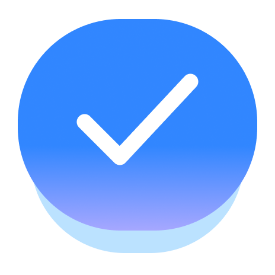

tasks Nijin's PortfolioPrivacy Policy
This Privacy Policy explains how the tasks Chrome Extension ("we", "our", or "the Extension") accesses, handles, and protects your information when you use the Extension. We are committed to protecting your privacy and ensuring you have a safe, transparent experience.
1. Overview and Key Principle
The Extension is a local-first browser extension designed to sync your task lists directly with your Google Tasks account. We do not run any servers, and we never collect, store, or transmit your task details or personal credentials to any third-party systems. All sync communication occurs directly between your local browser and Google's official API servers.
2. Google Account & Tasks API Data (Google OAuth)
To provide syncing capabilities, the Extension requests permission to access your Google Tasks via Google's OAuth 2.0 protocol. Specifically, we request access to the following Google API scopes:
- https://www.googleapis.com/auth/tasks: Allows the Extension to read, edit, create, and delete your tasks and task lists to keep them synchronized with Google Tasks.
How we handle this data:
- Authentication Tokens: The OAuth access token is stored securely in your browser's local sandbox storage (using
chrome.storageAPI) to keep you logged in. It is never exposed or sent to anyone else. - Task Content: Your task titles, notes, due dates, and completion status are fetched directly from Google API endpoints, rendered inside your browser extension panel, and cached locally. We do not store or mirror this data anywhere except in your browser's memory and local cache.
3. Google API Services User Data Policy Compliance
Our use of information received from Google APIs will adhere to the Google API Services User Data Policy, including the Limited Use requirements. We do not use your task data for advertising, marketing, analytics, profiling, or any other commercial purpose other than rendering and syncing your task list in the Extension.
4. Data Storage and Retention
Because the Extension is local-first, we do not retain your data on any databases of our own. If you uninstall the Extension or sign out of your Google Account within the Extension settings, all locally stored tokens and caches will be instantly deleted from your browser's local memory.
5. Information Sharing and Disclosure
We do not share, sell, rent, or distribute your personal details or task data to any third-party companies, advertising networks, or individuals under any circumstances.
6. Security
We take the security of your data very seriously. All interactions between the Extension and Google Tasks API endpoints are secured using HTTPS (SSL/TLS) encryption. Access tokens are stored locally inside the browser's extension sandbox, isolated from other websites or extensions.
7. Revoking Access
You can revoke the Extension's access to your Google account at any time. To do so, visit the Google Account Permissions page and remove access for "Tasks". Doing so will stop all sync activity and render the Extension signed out.
8. Extension Permissions & Justifications
The Extension requests only the permissions it needs to function. Below is a transparent explanation of every permission used and why:
- sidePanel: The extension's entire user interface is rendered inside Chrome's side panel. This permission is used to register the extension's HTML page as a side panel and to open it programmatically when the user clicks the extension icon or a notification.
- storage: Used via
chrome.storage.localto persist the user's tasks, task lists, categories, and preferences locally in the browser. This enables offline access to tasks and allows the background service worker to read task data for scheduling reminder alarms. - alarms: Used to schedule task reminder notifications. When a user sets a due date or reminder on a task, the extension creates a
chrome.alarmstimer that fires at the specified time to trigger a desktop notification reminding the user of the upcoming task. - notifications: Used to display desktop reminder notifications when a task's due date or scheduled reminder time arrives. Notifications show the task title, priority, and due time so the user doesn't miss deadlines.
- identity: Used to authenticate the user via Google OAuth 2.0 using
chrome.identity.launchWebAuthFlow(). This allows the user to sign in with their Google Account so the extension can obtain an access token to sync tasks with the Google Tasks API. - Host permissions (
https://*.googleapis.com/*): Required to communicate with the Google Tasks API (tasks.googleapis.com) to read, create, update, and delete the user's task lists and tasks, and with the Google OAuth2 userinfo endpoint to retrieve the signed-in user's name, email, and profile picture for display in the extension.
9. Remote Code Disclosure
This extension does not use remote code. All JavaScript is bundled locally within the extension package. The only remote requests made are REST API calls to Google's official API endpoints (googleapis.com) to fetch and sync task data.
10. Data Use Certification
We certify that the tasks extension complies with the Chrome Web Store Developer Program Policies regarding data use:
- We do not sell user data to third parties.
- We do not use or transfer user data for purposes unrelated to the extension's core task management functionality.
- We do not use or transfer user data to determine creditworthiness or for lending purposes.
- We do not use user data for advertising, marketing, analytics, or profiling.
11. Changes to This Privacy Policy
We may update this Privacy Policy from time to time. Any changes will be posted on this page with an updated "Last Updated" date. We encourage you to review this page periodically.
12. Contact Us
If you have any questions or feedback regarding this Privacy Policy, please contact the developer via Nijin's LinkedIn Profile or Instagram.